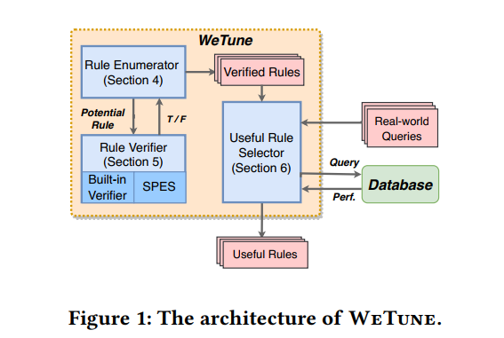

这篇论文是我在面试 IPADS 实验室时选读的第二篇论文，主要内容是数据库 SQL 语句优化。论文用到了类似 Zhihao Jia 老师的计算图自动优化器 TASO 一样的思路，爆搜 + 形式化验证。读完可以看出作者很强的数学功底。论文地址：WeTune: Automatic Discovery and Verification of Query Rewrite Rules，发表于 SIGMOD’22。
Intro
对于许多 web 应用来说，database query latency 对于 ux 来说是很重要的。
query rewriting 是一种将 original query 转换成一个 semantically equivalent 的 alternative query 的技术。rewriting 依赖于 rules，这些 rules 指定了 queries 之间的等价关系。现有的 rules 通常是被 human experts 手工制作，并且需要花费数十年的时间手工积攒。
然而，只依靠人力来发现 rewrite rules 是远远不够的。query language 的丰富的特征和微妙的语法使得保持 equivalence 是很难的一件事。所以 hand-written rewrite rules 的增速是非常缓慢的。
这个情况因为 ORM 的广泛使用而变得更糟。ORM 可能会生成一些违反直觉的 SQL 语句。
我们研究了 50 个真实世界的 Github 上开源的 web app 中的 queries（被 developer 手工加速），最新版的 SQL server 没能 rewrite 其中的 27 个。其中有一个查询的原始版本需要 37s，而 rewrite 版本只需要 0.3s。
在这篇文章中，我们提出了 WeTune，一个 rule 生成器可以自动发现新的 rewrite rules。从 compiler superoptimization （通过穷尽式的搜索来来获取一个 optimal code）中获取了灵感，WeTune 也是通过 brute-force 的枚举所有潜在的 rules + 一个 correctness check 来自动发现所有的 rewrite rules。
即使高层的方法是简单的，这里还有一些挑战。首先，怎样用一个 general form 来表示 rewrite rules 并且允许 enumeration？其次，如何自动验证枚举的 rules 的正确性？为了解决这些挑战，WeTune 将一个 rewrite rule 表示成一对 query plan templates，以及一系列 constraints 将 templates 联系起来。它枚举所有可能的 query plan templates（以一个 threshold number 个数的算子为上界）。一个 query plan template 是 generic 的，它使用 symbols 而不是具体的名字来表示 tables，columns 和 predicates。WeTune 进一步枚举所有的 constraints，即那些可以潜在使得一队枚举的 plan templates 语义等价的 conditions。例如，特定的两个 queries 里的 input 关系可以被约束成一样的，或者一个 projection 的 attributes 被约束成另一个的子集。WeTune 使用 SQL verifiers 来验证每个 rewrite rule 的正确性。它包含一个 built-in 的 verifier，提供了一个形式化的方式来将 rewrite rules 建模成 SMT formulas。然后正确性问题就可以自动用一个 SMT solver 来解决。WeTune 同时也可以支持使用现有的 SQL verifiers 例如 SPES 来证明正确性。
SMT（Satisfiability modulo theories），它推广了 SAT 问题：引入了实数、整数以及多种 data structures 例如 lists，arrays，bit vectors 和 strings。
我们将 WeTune 用在了现实世界的 database-backed 的应用上然后发现效果很好。
Motivation
2.1 Insufficiency of Existing Rewrites
1 | SELECT * FROM labels WHERE id IN ( |
这个查询有两处地方。首先，最外层和次外层的 subquery 几乎是一样的。其次，ORDER BY clause 是没用的，因为最外层的 IN operator 把 subquery 看成一个无序列表。
1 | SELECT * FROM labels WHERE project_id = 10 |
1 | SELECT id FROM notes WHERE type='D' AND id IN ( |
这个查询的 IN 是多余的。
1 | SELECT id FROM notes WHERE type='D' AND commit_id = 7 |
2.2 Impact and Scope of Missed Rewrites
…
3 Our Approach
WeTune 搜索 useful rewrite rules 分为两个 stages。在第一个阶段，它使用 Rule Enumerator 来枚举潜在的 rewrite rules 从而发现 promising rules，并且通过 Rule Verifier 来验证它们的正确性。在这个阶段，WeTune 使用简单的启发式来筛选出那些不太可能带来性能提升的 rules。然后到下个阶段，WeTune 实证地去确定 promising rules 的可用性（通过用它们来重写真实世界的 queries）然后来衡量它们的 performance。
在 rule enumeration 和 verification 中，我们会遇到一些 challenges——这些挑战是 query rewriting 中独有的，不会在 compiler optimization 中出现的。
- 如何表示一个 rewrite rule 来让它对 enumeration 友好？
- 如何决定一个 enumerated rewrite rule 是正确的？

4 Rule Enumerator
WeTune 将一个 rewrite rule 建模成一个三元组：<q_src, q_dest, C>。这里 q_src 是 source query plan template，q_dest 是 destination query plan template，C 是一系列 constraints。一个 query plan template 是 logical query plan tree 的片段，算子包括 selection，projection 等等。与具体 query 不同，table names，attributes 和 predicates 都是 symbolic 的。constraint set C 包含一系列 predicates，其中每个都描述了一些 source 和 destination query plan templates 之间的 symbols 的关系。这个 rule 规定了，如果 C 中所有的 constraints 都满足了，那么 q_src 和 q_dest 语义上是等价的。给定一个 SQL query q，如果某些 q 中的 fragment match q_src，matched fragment 可以被相应的 fragment（match q_dest 并且满足 C 的 fragment）替换。
下面是一个由 WeTune 发现的 rule 的例子。
1 | q5: ... FROM T WHERE T.x IN (SELECT R.y FROM R) |
Rule Enumerator 会枚举所有潜在的 rewrite rules。首先它会枚举所有可能的 plan templates。为了限制搜索空间，它 bound 了 template size 这样一个 template 里的 operators 数量可以在一个小 threshold 以内。然后，对于每对 plan templates，它枚举所有可能的 constraints。最后，它选择比较 promising 的 rules。
4.1 Plan Template Enumerator
query plan template 是一棵树，nodes 是关系代数 operators（带有 symbolic inputs 或 parameters）。
Operator. 每个 operator 接受一到两个 relations 作为 input（除了 Input operator），根据它的 semantic 进行 algebraic computation，然后输出一个 single relation。现在，WeTune 只支持一部分 operators。
Symbol. 在一个具体的 query plan 中，operators 可以被具体的 schema 信息 parameterize，例如 column names。在一个 query plan template，这些具体的 parameters 被 symbolic 所替代。
- Relation Symbol。一个 relation symbol (r for short) 代表了一个 relation。也就是关系（或者叫 table）。作为一个 query 的 input。
- Attribute list Symbol。一个 attribute list symbol (a for short) 代表了一列 attributes。此外，所有的 relation symbol r 都和一个 attribute list symbol
a_r相关联，代表 r 中所有的 attributes。 - Predicate Symbol。一个 predicate symbol (p for short) 代表了一个 predicate，以 0 个或多个 values 作为输入，然后返回一个 boolean value。它被用来 parameterize 一个 selection operator 的 predicate expression。
WeTune 的 enumeration 策略先枚举一个 query plan 的树的结构，然后再枚举每个 tree node 的 operator type。更准确地说，enumeration 由三步组成：首先，WeTune 构造所有可能的 tree structures，包括两种可能的 internal tree nodes：1 child node 和 2 children node。其次，对于每个 tree structure，它对每个 node 赋予 Table 2 里的 operators 来枚举具体的 trees。operator 的输入个数应该与 node 的 children 个数匹配。最后，它给每个叶子位置加上 Input nodes。WeTune 最多枚举 不超过 4 个 operators 的 templates（不含 Input）。此外，它还会筛掉一些 invalid SQL query，例如位置不对的 Deduplicaiton。
注意这里并不需要枚举 symbols。因为 template 都是 generic 的，所以这些东西直接编号就好，具体限制见 constraints。
4.2 Constraint Enumerator
WeTune 将枚举好的 templates pair 成一对，然后枚举它们之间的 constraint set。一个 constraint 是一个 specify q_src 和 q_dest 之间 symbols 关系的 predicate。为了限制搜索空间，我们只考虑如下的 constraints（从我们研究现有 rewrite rules ，考察 developer 手写 query rewrites 的经验中总结出来）：
RelEq(rel1, rel2)这个限制表示 rel1 和 rel2 两个 relation symbol 等价（包含完全相同的 tuples）。AttrsEq(attrs1, attrs2)这个限制表示 attrs1 attrs2 两个 attribute list symbols 等价，即含有相同的 attributes。PredEq(pred1, pred2)这个限制表示两个 predicate symbol 等价，即互相蕴含。SubAttrs(attrs1, attrs2)这个限制表示 attrs1 含于 attrs2。它可以用来表示一个 attribute list 来自哪个 relation。RefAttrs(rel1, attrs1, rel2, attrs2)这个限制表示，rel1.attrs1 的值都在 rel2.attrs2 里。Unique(rel, attrs)这个限制表示 rel 在 attrs 上的值都是 unique 的。NotNull(rel, attrs)这个限制表示 rel 在 attrs 上的值不是 NULL
给定 <q_src, q_dest>，constraint enumeration 会生成集合 $C^*$：它包含所有可能的和 q_src 与 q_dest 有关的 constraints。
这是通过往上述的 constraints 里传入这俩 template 里有的 symbols 来实现的。
4.3 Searching for Promising Rules
WeTune 需要找到 $C^*$ 的一个子集 $C$ 使得其能让 q_src 和 q_dest 语义等价。
一个 rule 是 promising 的，如果它满足如下两个要求：
- 首先，C 是最 relaxed 的 constraint set 使得去掉任何一个 constraint 都会使得
q_src和q_dest的等价关系不成立。 - 其次，
q_dest的 operators 个数 <=q_src的。在这个 heuristic 下，rewrite rules 会倾向于简化而不是增加 source query 的复杂度，更可能会提高 performance。
搜索算法大致如下：
1 | EnumerateRules(k): |
这个算法首先枚举所有的 templates，然后将它们 pair 起来，忽略掉那些 q_dest 比 q_src 复杂的 pair（operator 个数）。然后生成 C*（即所有可能的 constraints 的集合）。然后搜索 C* 的那些 promising 子集（通过 SearchRelaxed）。
这个 dfs 会不断 relax 这个 constraint set，并且只返回最 relax 的那些。它返回的是 a set of sets，其中每个都是最 relax 的 set。
为了减少 search cost，WeTune 采用了如下方法：首先，它排除了 C* 中的 useless constraints：useless 定义为如果它只包含 q_dest 里的 symbols 或者对应一个 illegal 的 query plan。其次，它不会 check C* 的每一个 subset，而只 check 那些是 closure 的并且 non-conflicting 的。（closure 意思是，它们不 imply 任何不在 set 里的其它 constraint）。两个 constraints 是 conflict 的，如果它们共存会导致一个 illegal plan。最后，如果 C’ imply C，并且 q_src, q_dest, C’ 是一个合法 rule，那 WeTune 会跳过 check C。
5 Rule Verifier
我们基于 FOL 设计了一个 rule verifier。WeTune 也可以用 SPES 来 verify rules。
5.1 Built-in Rule Verifier
built-in verifier 首先将一个 rule 表示为一个 U-semiring expression，然后将 expression 转化为 FOL formulas。最后，FOL formulas 被使用一个 SMT solver 验证。
5.1.1 Formal Representation of Rules
我们用 U-expression 来表示 q_src 和 q_dest，然后使用 FOL formulas 来表示 constraint set C。
【R】(x)返回 tuple x 在 relation R 里的出现次数（multiplicity）[b] = if b then 1 else 0即 bool 转 integer。它可以被用来将一个 predicate 转为一个 U-expression。||b|| = if e > 0 then 1 else 0即 deduplication。这里 e 是一个 U-expression。not(e) = if e > 0 then 0 else 1这里 e 是一个 U-expression。它用来 model 一个 predicate 的 negation。- $\sum_{t \in D} f(t) = f(t_0) + f(t_1) + \dots$ for all $t_i \in D$，这里 D 一个 tuple set（叫做 summation domain）。 $f$ 是一个从 $D \rightarrow N$ 的函数。默认 $D$ 是包含所有可能 tuples。
WeTune 将 symbolic query templates 翻译成 U-expression。它分为如下几个步骤：
Step 1. 翻译 query template 中 symbols。
- 每个 relation symbol
rel对应着一个函数【r】(t): Tuple -> N，接受 tuple t 作为输入，返回它的 multiplicity。 - 每个 attribute list symbol
attrs对应着一个函数【a】(t): Tuple -> Tuple，接受一个 tuple t，将其投影到 attrs 上然后返回投影后的 tuple。 - 每个 predicate symbol
pred对应一个函数【p】(t): Tuple -> Bool接受一个 tuple t，返回 t 是否满足 pred。
为了简单，我们在没有歧义时会省掉 【】
Step 2. 翻译 plan structure。这是通过对 tree structure 递归来完成。
1 | ToUExpr(q): |
其中 Table 3 负责翻译 plan 的各个节点。
| Operator | Expression |
|---|---|
| $Input_r$ | $f(t) := r(t)$ |
| $Proj_a$ | $f(t) := \sum_{t_l} f_l(t_l) \times [t = a(t_l)] $ |
| $Sel_{p, a}$ | $f(t) := f_l(t) \times [p(a(t))]$ |
| $InSubSel_a$ | $f(t) := f_l(t) \times \Vert f_r(a(t)) \Vert \times not([IsNull(a(t))])$ |
| $IJoin_{a_l, a_r}$ | $f(t) := \sum_{t_l, t_r} [t = t_l \cdot t_r] \times f_l(t_l) \times f_r(t_r) \times [a_l(t_l) = a_r(t_r)] \times not([IsNull(a_l(t_l))])$ |
| $LJoin_{a_l, a_r}$ | $f(t) := (\text{IJoin Expr.}) + \sum_{t_l, t_r} ([t = t_l \cdot t_r] \times f_l(t_l) \times [IsNull(t_r)]) \times not(E)$，其中 $E := \sum_{t_r’} (f_r(t_r’) \times [a_l(t_l) = a_r(t_r’)] \times not(IsNull(a_l(t_l))))$ |
| $RJoin_{a_l, a_r}$ | |
| $Dedup$ | $f(t) := \Vert f_l(t) \Vert$ |
备注：这个 LJoin 实现的意思是，分两种情况讨论：如果右表有，则算在 IJoin 里；否则要求右表没有，然后和 Null 配对。（$not(E)$ 就是要求右表没有）
Handling Null 一个 UDP 的重要局限就是它假设 attributes 都不会是 NULL。因此 UDP 无法支持 OUTER JOIN。为了处理 NULL 和 OUTER JOIN，WeTune 支持了它们。其它 operators（例如 aggregation）比较 trickier，作为 future work。
对于 $Input_r$，$r(NULL)$ 返回 input relation 里的 NULL tuples 的个数（A tuple is NULL if all its attributes are NULL. A NULL attribute can be considered as a NULL tuple with only one attribute）。
对于 $Proj_a$，$f(NULL)$ 返回在 a 这些 attributes 投影上是 NULL 的个数。
对于 $Sel_{p, a}$，一些 predicate 例如 > 或 < 会在 evaluating NULL 时候返回 unknown，那么 [p(a(t))] 会返回 0。这里我们可以把 unknown （在 three-valued logic 里）当作 false（two-valued logic 里）。
对于 $Dedup$，如果至少有一个 NULL tuple 在 relation 里，返回 1；否则 0。
为了 model NULL 对 Table 3 里的其它 operators 的影响，WeTune 往 U-expression 里引入了一个新的 predicate $IsNull(x)$。使用它 WeTune 可以 filter out NULL tuples。
例如，对于 IN-subquery，我们使用它来 filter outer query 的 NULL tuple；对于 INNER JOIN，我们使用它来 filter out 左右 relation 有 NULL tuples 的情况。
Supporting Outer Join operators. OUTER JOIN 在不 match 的时候也会保留这个 row，然后给另一边 fill 上 NULL。例如 x LEFT JOIN y ON x.a=y.b 保存了 left table x 的所有 rows。对于 x 里不 match 任何 right row 的那些 row，NULL 被 appended 作为 right row。
所以 LEFT JOIN 包含两部分：(1) INNER JOIN. (2) non-matched rows。 其中 $[IsNull(t_r)]$ 表示 NULL 被 append 到右边；$not(E)$ 描述了 non-matching condition。
Representing constraints with FOL formulas. 每个 constraint 直接根据 Table 4 翻译为一个 FOL formula。
| Constraint | Expression |
|---|---|
| $RelEq(r_1, r_2)$ | $\forall t. r_1(t) = r_2(t)$ |
| $AttrsEq(a_1, a_2)$ | $\forall t. a_1(t) = a_2(t)$ |
| $PredEq(p_1, p_2)$ | $\forall t. p_1(t) = p_2(t)$ |
| $SubAttrs(a_1, a_2)$ | $\forall t. a_1(t) = a_1(a_2(t))$ |
| $RefAttrs(r_1, a_1, r_2, a_2)$ | $\forall t_1. ((r_1(t_1) > 0 \land \neg (IsNull(a_1(t_1)))) \Rightarrow \exists t_2. (r_2(t_2) > 0 \land \neg (IsNull(a_2(t_2))) \land [a_1(t_1) = a_2(t_2)])$ |
| $Unique(r, a)$ | $(\forall t, t’. r(t) > 0 \land r(t’) > 0 \land a(t)=a(t’) \Rightarrow t=t’) \land (\forall t. r(t) \le 1)$ |
| $NotNull(r, a)$ | $\forall t. r(t) > 0 \Rightarrow \neg IsNull(a(t))$ |
然后全部 conjunction 起来就好了。
5.1.2 Verification of the Rule Correctness
在使用 U-expressions 形式化 query templates 和使用 FOL formulas 形式化 constraints 之后，rule verifier 会使用 SMT solver 来 check 一个 rule 的 correctness。我们需要使用 FOL formulas 来形式化 rule 的 correctness。
Definition 1 (Interpretation). 给定一个 query plan template q（以 U-expression 形式表示），一个 interpretation 是 q 里所有 symbols 的一个 assignment of meaning。我们将这个具体 query plans 记为 $q^{I}$. 相似地我们对 constraint set 有 $C^I$.
Definition 2 (Correctness of a rewrite rule). 给定一个 query plan templates pair <q_src, q_dest> 和一个 constraint set C，
这一定义与 bag equivalence 一致：两个 bags 是 equivalent 的 iff 每个 tuple 在两边都含有相同的 multiplicity。
为了证明 query equivalence，UDP 依靠将两个 U-exp 转换成 normalized forms，然后在它们之间建立起 syntactic isomorphism。然而，这样的 syntactic isomorphism 要求在 U-exp 的 summations 里建立起一对一的等价关系，像 OUTER JOIN 这样的算符不能保证这一点（即 sum 数量相同）。
Logic-based decision procedure. 和 UDP 不同，WeTune 使用一个 logic-based 的 decision procedure——将 Def 2 转换成一个 FOL formula 然后使用 SMT solver 来 verify 它。
实现它有两个 challenges。首先是怎样将 U-expression 转换为 FOL。这些 FOL 能满足充分条件：即满足 FOL 一定满足 U-exp。
在 encoding FOL formulas 到 SMT solver 时，我们将 tuple 作为一个带有 SMTLIB uninterpreted sort 的 object，然后将 relation（Tuple -> N），predicate（Tuple -> Bool）都 encode 为 uninterpreted function。
最难的部分在于 summation（表 5 的最后两行）。unbounded summation domain 使得它的 value 很难用 FOL formula 表示。我们通过一个 insight 来解决这个问题。因为最关键的是等价关系，所以没必要显式地表示出一个 summation 的 value。
WeTune 的方法是 “放松条件”，即找到一个 $P$ 满足 $P \Rightarrow \text{our formula}$. 对于第一个式子
（aligned summations），我们将其放松为（Theorem 5.1）
所以 FOL 下去就是
（Theorem 5.2）是对 5.1 的推广，即不 aligned 的情况
我们把它放松为对于每一项，或者 $r(t) \times f(t)$ 和 $\sum_{s} h(t, s)$ 同时为 0，或者 $r(t) \times f(t) = r(t) \times g(t)$ 且 $\sum_s h(t, s) = 1$。注意 $\sum_s h(t,s) = 0/1$ 的 translate 是前文有定义的。
5.2 Integrating SPES
SPES 额外支持了 UNION 和 Aggregation 算子。Aggregation 算子包含四个 symbols：
1 | SELECT a_group, f(a_agg) FROM ... GROUP BY a_group HAVING p(a_group) |
a_group: GROUP BY 子句后面的 attributes
a_agg：用于 aggregate function 计算的 attributes
f：aggregate function
p：用于 HAVING clause 的 predicate symbol
由于 SPES 只能接受 concrete 的 SQL queries，而且无法识别 constraint set C，WeTune 会将 q_src 和 q_dest concretize。主要分为以下两步：
- 首先，给每个 symbol 分配 name（根据那些 equivalence constraints，包括 RelEq，AttrsEq，PredEq 和 AggrEq），用等价类的思想。
- 然后，对于每个 attribute，我们根据 SubAttrs constraints 找到它属于的 relation。如果一个 attribute c 属于一个 relation t，我们会将其改写成
t.c。 - 最后，我们根据上述来构建 schema。
6 Selecting Useful Rules
在生成 promising rules 之后，WeTune 会实际地去 evaluate 他们的 usefulness。Basic idea 是从 real-world applications 收集一些 queries，然后衡量 rules 是否能 rewrite 它们到一个更有效的 form。理想地，rewrite 由 database optimizer 进行（使用现有的 rewriting techniques）。然而，为了和 non-open-source databases 协作，WeTune 在 database 之外进行 rewrite。
WeTune 的 rewriting logic 是基于简单的贪心搜索。给定一个 query，它会 iteratively 地 apply rules 直到没有 rule 可以使用。WeTune 使用现有的 database 中的 cost estimator 来衡量 cost。
7 Additional Optimization
WeTune 还提出了两种额外的 optimization strategies 来减少 redundant rules，以及消除 SQL 语句中的 ORDER BY。
Reducing redundant rules. 我们可以应用多个 rules 来 rewrite 一个 query，但是有的 rules 可能是 redundant 的：例如 R3 可以由 R1 和 R2 共同应用得到。 形式化地，给定一个 rules 集合 $\mathbb{R}$，以及其中的一个 rule $R \in \mathbb{R}$，我们称 $R$ 在 $\mathbb{R}$ 中是 reducible 的如果
但是我们不可能 check 所有的 queries。实际上我们只需要找到 minimal pattern that $R$ is applicable，也就是任何 R 能 apply 的 query 都包含 $\hat{q}$ ，然后只要对 $\hat{q}$ check 这个条件就可以。